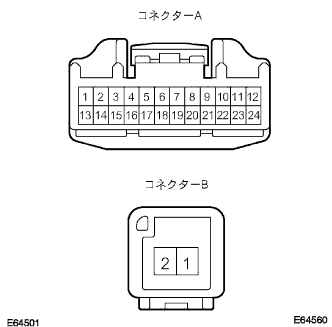

Telephone wire single inspection |
| 1. Telephone wire inspection |
|  |
Conduct inspection (between navigation computers ← → telephone switch assessy)
Use SST (Toyota Electrical Tester) to inspect the conversation between each terminal of telephone wires.
| Tester connection | Measurement conditions | standard |
|---|---|---|
| TSW+(A1) ← → TSW+(B2) | Always | There is an conductor |
| TSW- (A13) ← → TSW- (B1) | Always | There is an conductor |